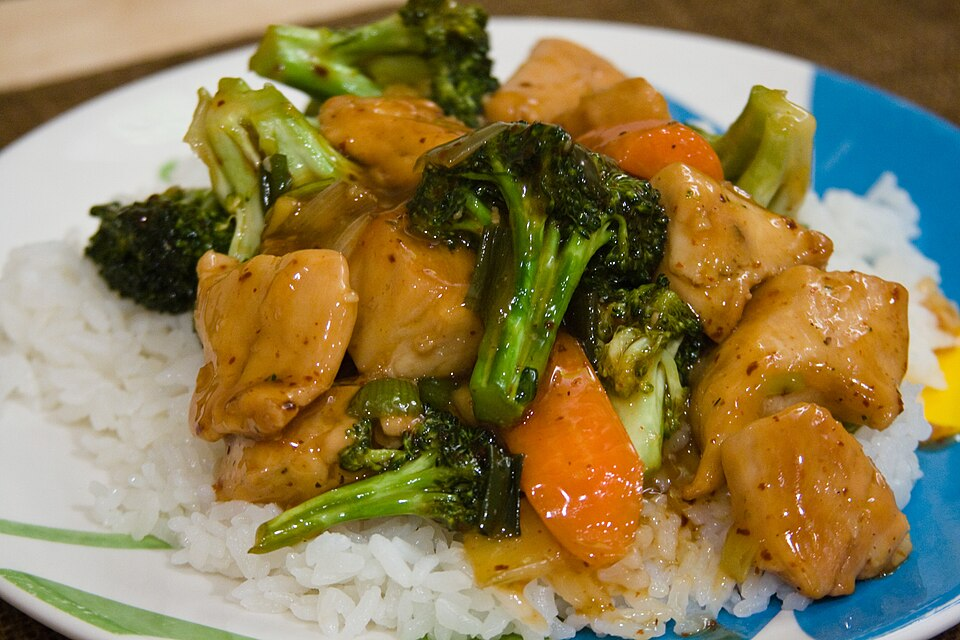

Commercial Jet Burners
Our kitchen employs industrial high-pressure burners producing tens of thousands of BTUs, generating the instantaneous temperature needed to sear meat surfaces instantly.
"Wok Hei" literally translates to the breath of the wok. Achieving it requires intense physical technique, carbon steel seasoning, and ferocious BTU heat. At Taipei Express, our wok line operates at over 600 degrees Fahrenheit, atomizing microscopic oil droplets to sear ingredients in seconds without softening their crisp internal structure.

Why home stoves and standard pans cannot produce true wok flavor.
Our kitchen employs industrial high-pressure burners producing tens of thousands of BTUs, generating the instantaneous temperature needed to sear meat surfaces instantly.
Years of high-heat cooking have built a natural non-stick patina on our carbon steel woks, imparting complex roasty undertones that cannot be found in non-stick cookware.
Vegetables like broccoli, snow peas, and carrots spend mere seconds in the wok. They emerge tender-crisp with vibrant emerald color and full nutritional snap.